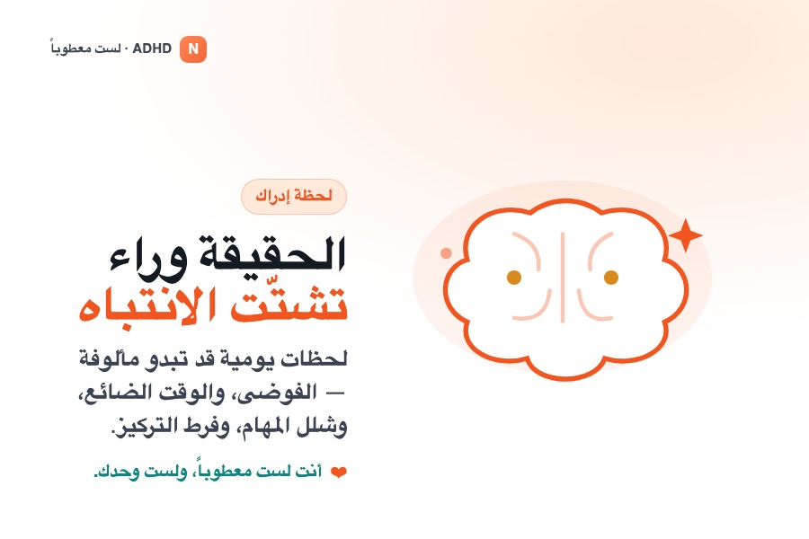
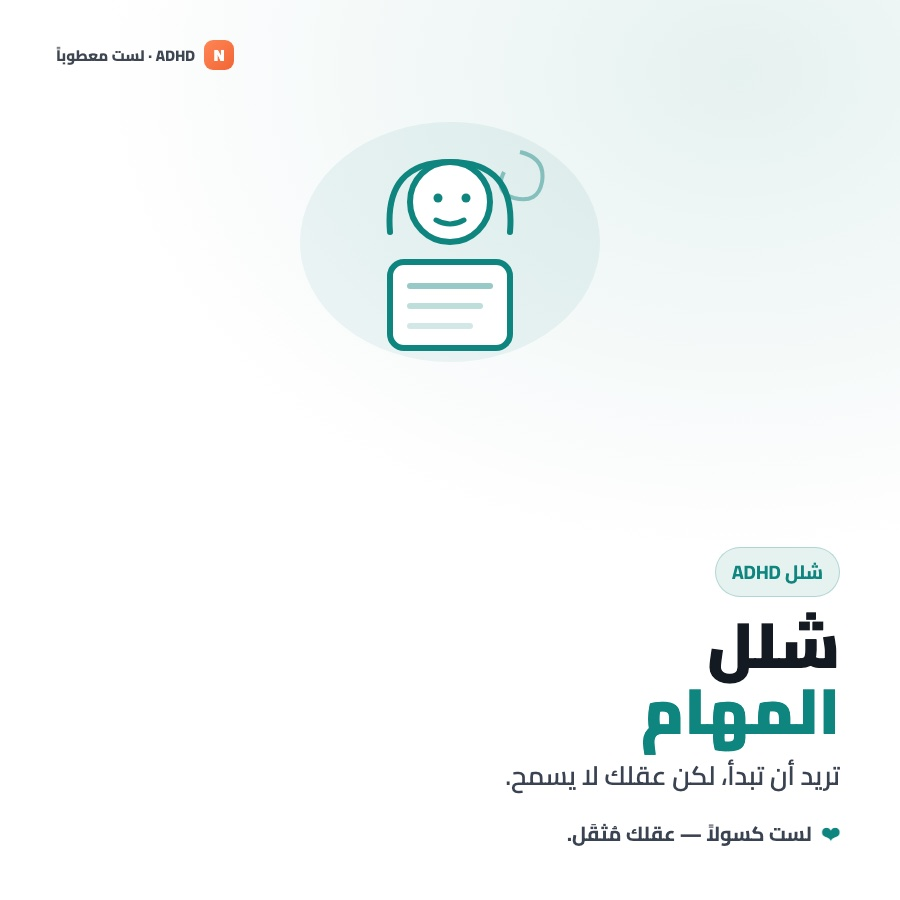
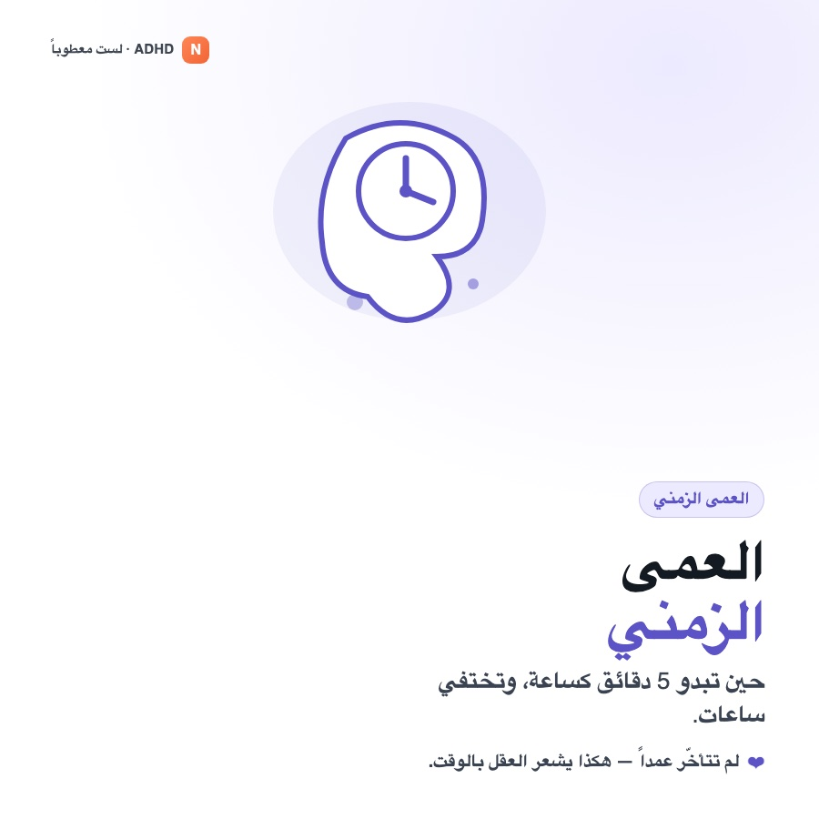
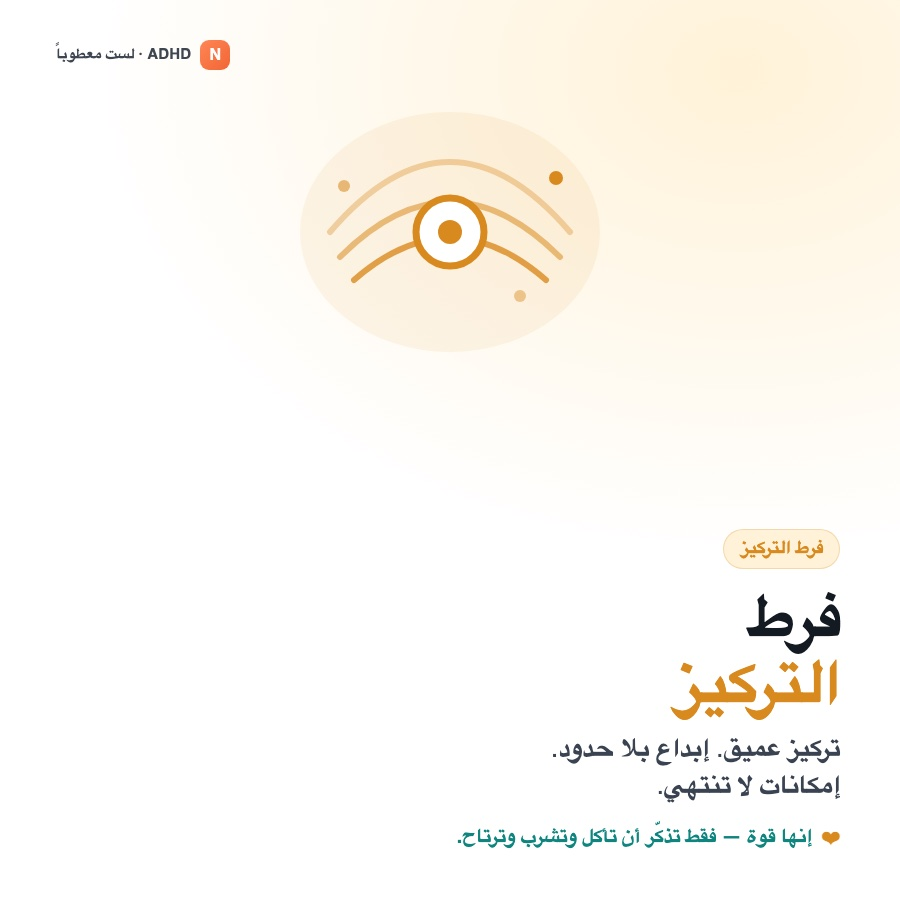
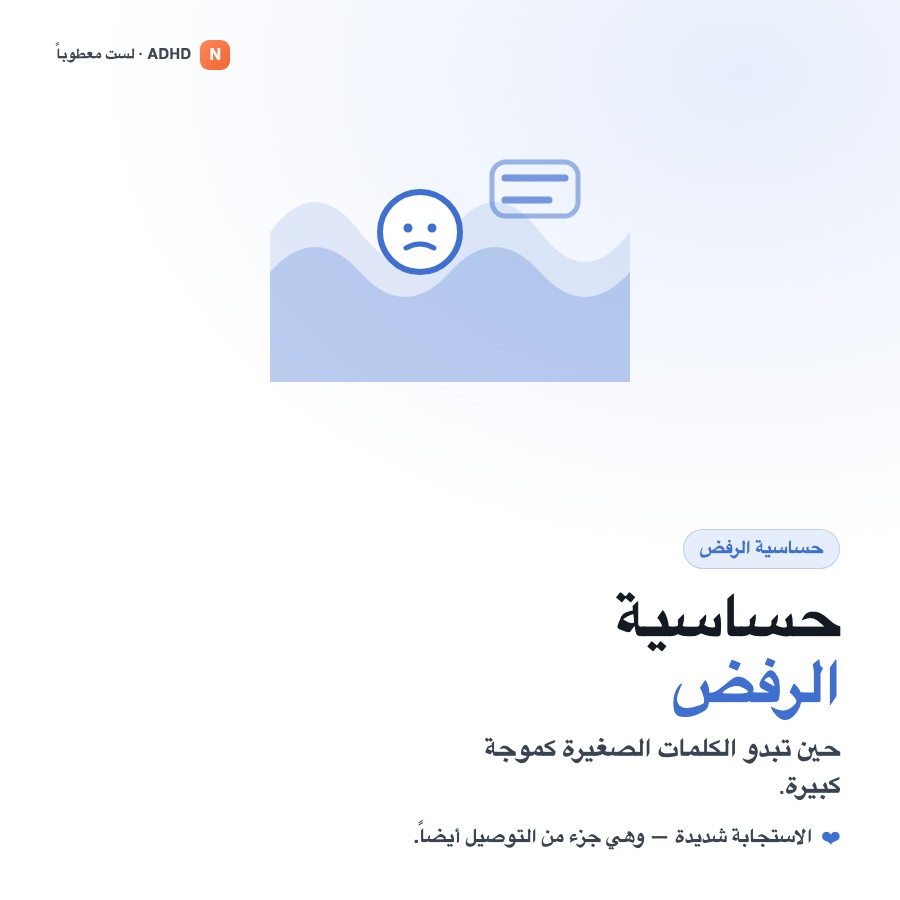
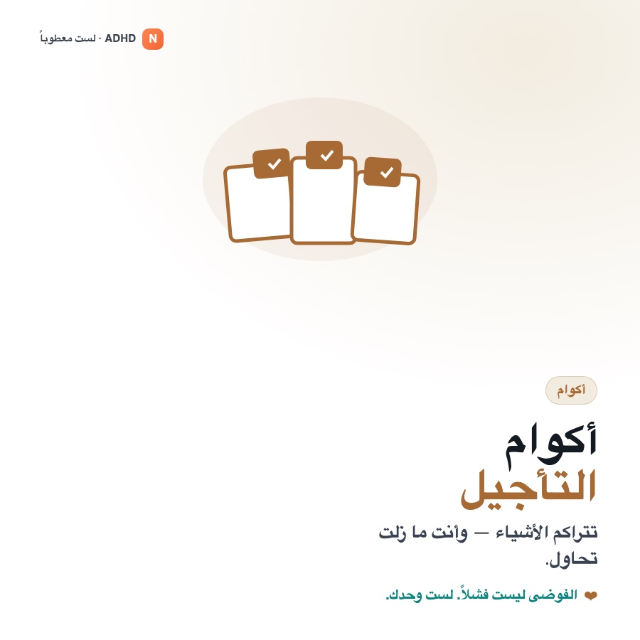
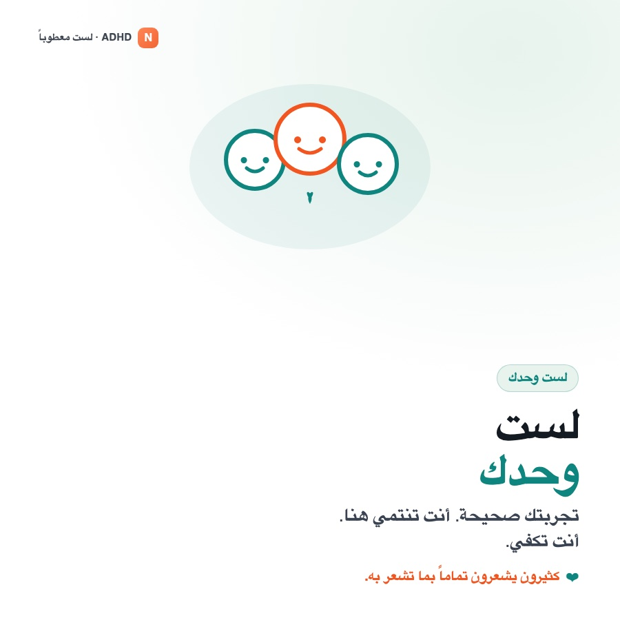

النمط 01
قصور الانتباه
النمط الهادئ الذي يسهل إغفاله. ينحرف الانتباه وتفوت التفاصيل.
- يفقد التركيز ويغفل التفاصيل
- كثير النسيان وغير منظّم
- يتجنّب الجهد الذهني المستمر
- كثيراً ما يُوصف بـ«الشارد» أو «الكسول»
كل ما يستحق معرفته عن اضطراب نقص الانتباه وفرط الحركة في مكان واحد — العِلم، والعلامات، والبيانات، والمؤشرات التحذيرية، والاستراتيجيات العملية التي تُحدث فرقاً فعلياً.
الاهتمام والتحفيز يقودان التركيز أكثر من الأهمية — ومن هنا يأتي فرط التركيز في بعض المهام وشبه انعدامه في أخرى.
هذا للتثقيف لا للتشخيص. لا يمكن تشخيص ADHD إلا من قِبَل مختص مؤهل. لا شيء هنا — بما في ذلك الاختبار الذاتي — يُعدّ تقييماً طبياً أو بديلاً عن الرعاية المهنية. إن وجدت أن أياً من هذا ينطبق عليك، فاعرضه على طبيب أو أخصائي نفسي أو طبيب نفسي.
لمحة قصيرة عن التجربة.
لحظات يومية قد تشبه واقعك — تراكم الفوضى، عمى الوقت، شلل المهام، التركيز المفرط. إن بدا أيٌّ منها مألوفاً: أنت لست معطوباً، ولست وحدك.







نشرات PDF مناسبة للطباعة ومتتبّعات قابلة للتعبئة — احتفظ بها أو شاركها أو اصطحب نسخة مملوءة إلى موعدك. كلها مجانية.
انقر أي قسم للانتقال إليه مباشرة.
اضطراب نقص الانتباه وفرط الحركة (ADHD) حالة عصبية نمائية تؤثر في كيفية تنظيم الدماغ للانتباه والاندفاعات وتوجيه الذات. جذوره في اختلافات إشارات الدوبامين وشبكات الوظائف التنفيذية في الدماغ — لا في الذكاء أو الجهد أو التربية. ويظهر في ثلاثة أنماط معروفة.
النمط الهادئ الذي يسهل إغفاله. ينحرف الانتباه وتفوت التفاصيل.
النمط المتوتر الذي يتصرف أولاً. الطاقة والاندفاع يسبقان الكوابح.
النمط الأكثر شيوعاً — سمات بارزة من النمطين معاً.
يُعدّ ADHD من أكثر الحالات دراسةً في الطب النفسي. الأرقام أدناه تقديرات توافقية مستمدة من تحليلات بعدية كبيرة وأدلة تشخيصية — نطاقات لا أرقام دقيقة، لأن الانتشار يعتمد على كيفية وموضع القياس.
«نقص الانتباه» تسمية مضلّلة. الصعوبة الأساسية هي تنظيم الذات — مجموعة مهارات الإدارة في الدماغ التي تحوّل النية إلى فعل. حين تعمل بطريقة مختلفة، تنفصل معرفة ما ينبغي فعله عن فعله بالفعل.
الاحتفاظ بالمعلومة «نشطة» بما يكفي لاستخدامها — التعليمات، خطوات المهمة، سبب دخولك الغرفة.
الوقفة بين الاندفاع والفعل. تصفية المشتتات، ومقاومة الاستطراد، وعدم الاندفاع بالكلام.
الانطلاق — الجدار بين «ينبغي أن» والبدء، حتى في ما ترغب بفعله.
«عمى الوقت» — ضعف الإحساس بمدة الأشياء وبما مضى من الوقت. الآن مقابل ليس-الآن.
إدارة شدّة المشاعر ومدتها. الإحباط والرفض والحماس تُشعَر بقوة أكبر.
تبديل التروس، والانتقال بين المهام، والتكيّف عند تغيّر الخطة دون تعثّر أو إرهاق.
حول التزامن المرضي: نادراً ما يأتي ADHD وحده. القلق والاكتئاب واضطرابات النوم وصعوبات التعلّم (كعُسر القراءة) رفاق شائعون — وهذا أحد أسباب عدم موثوقية التشخيص الذاتي وأهمية التقييم المهني.
تعكس الأرقام تقديرات من مصادر تشمل DSM-5-TR والاتحاد العالمي لـ ADHD وتحليلات بعدية منشورة. اعتبرها استئناساً لا دقة قاطعة.
يُشخَّص ADHD سريرياً — فلا يوجد تحليل دم أو أشعة أو اختبار حاسوبي دقيق بما يكفي لتشخيصه وحده. يجمع المختصّ المدرَّب بين هذه الطرق:
تُطابَق الأعراض مع المعايير الرسمية: 6 أعراض معيقة أو أكثر من تشتّت الانتباه أو فرط الحركة والاندفاع (5 أو أكثر من عمر 17)، في مجالين أو أكثر، تبدأ قبل سنّ 12، تسبّب إعاقة حقيقية، ولا تُفسَّر بحالة أخرى.
يأخذ المختصّ تاريخاً مفصّلاً للأعراض والنمو والأثر اليومي. وهي العمود الفقري للتشخيص.
إفادات من الوالدين والمعلّمين و— للبالغين — شريك أو أحد الأقارب. فالتقرير الذاتي وحده يقلّل من تقدير الإعاقة الفعلية.
استبيانات معيارية (فاندربيلت، كونرز، ASRS) تعطي درجة للأعراض. تدعم المقابلة المبنية على المعايير ولا تحلّ محلّها.
استبعاد ما يُشبهه: أمراض الغدة الدرقية، واضطرابات النوم، واضطرابات المزاج والقلق، وتعاطي المواد، وإصابات الرأس.
ليست ضرورية للتشخيص في معظم الحالات، لكنها قد ترسم نقاط القوة والضعف التعلّمية.
مهام حاسوبية (TOVA، كونرز CPT، QbTest) تقيس تشتّت الانتباه (أهداف فائتة) والاندفاع (استجابات خاطئة) وتغيّر زمن الاستجابة؛ وبعضها يتتبّع الحركة بكاميرا تحت الحمراء.
مضافةً إلى التقييم السريري، قد تُسرّع أدوات مثل QbTest التشخيص وتقلّل المواعيد وتساعد في متابعة الدواء. لكن لا اختبار حاسوبي ولا مؤشّر حيوي ولا تخطيط دماغ ولا أشعة دقيق بما يكفي لتشخيص ADHD وحده — كلها مساندة، لا بديل.
لا يمكن تشخيص ADHD إلا من مختصّ مؤهّل. الاختبار الذاتي (كالذي في هذه الصفحة) قد يلمّح إلى أن التقييم يستحقّ المحاولة — لكنه لا يُشخّص.
إنها الحالة نفسها — لكنها تظهر بشكل مختلف مع تقدّم العمر. إليك ما يتشابه وما يتغيّر.
| ما يتغيّر | الأطفال | البالغون |
|---|---|---|
| فرط الحركة | ظاهر — جري وتسلّق وصعوبة الجلوس | قلق داخلي — إحساس بأنه «مدفوع»، وحركة عصبية |
| الاندفاع | مقاطعة وإطلاق الكلام ومجازفة جسدية | إنفاق واندفاع في القرارات وتغيير العمل/العلاقات |
| أين يظهر | المدرسة والبيت واللعب | العمل والمال والعلاقات والقيادة |
| ما يصاحبه | صعوبات تعلّم وعناد | قلق واكتئاب وتدنّي تقدير الذات بعد سنوات دون تشخيص |
| كيف يُكتشف | يلاحظه المعلّمون والوالدان | غالباً يكتشفه الشخص بنفسه — أحياناً بعد تشخيص طفله |
| عتبة التشخيص | 6 أعراض أو أكثر | 5 أعراض أو أكثر (من عمر 17) |
ADHD من أكثر الحالات سوء فهم. تأتي الوصمة من أفكار قديمة — وإليك ما تقوله الأدلة فعلاً.
يبدو ADHD مختلفاً عبر العمر. تصبح هذه الأنماط ذات دلالة حين تكون مستمرة، وحاضرة في أكثر من موقف، ومعطِّلة فعلاً — لا اليوم السيّئ العابر الذي يمرّ به الجميع. يشير اللون إلى قوة توجيه كل علامة نحو التقييم.
بداية قوية ثم تعثّر، ومقبرة من الأشياء نصف المنجزة — رغم اهتمامك بها.
تقدير أقل للوقت باستمرار، وضياع ساعات، وتفويت مواعيد رغم الجهد والتذكيرات.
ردود سريعة شديدة؛ تحمّل منخفض للإحباط؛ الإحساس بالرفض بحدّة (يُسمّى غالباً RSD).
المفاتيح، المحفظة، الهاتف، المواعيد، خيوط الحديث — تتسرّب من بين الأصابع روتينياً.
المقاطعة، الإنفاق الاندفاعي، القرارات المفاجئة، الاندفاع بالكلام — التصرّف قبل إدراك العاقبة.
فرط حركة تحوّل إلى الداخل: ذهن متسارع، صعوبة في الاسترخاء، حاجة إلى تحفيز دائم.
تتبخّر ساعات على شيء جاذب بينما المهام العاجلة المملة يتعذّر لمسها.
النماذج والرسائل والمهام تتكدّس في تراكم مُشلّ لا يتناسب مع حجمها الفعلي.
أخطاء طائشة، واجبات غير منجزة، يبدو أنه لا يستمع حتى حين تخاطبه مباشرة.
لا يبقى جالساً، يتسلّق ويركض في الأوقات الخطأ، «دائم الحركة»، يتلوّى بلا توقف.
يجيب قبل انتهاء الأسئلة، يقاطع الألعاب والأحاديث، يعاني من الانتظار.
الواجبات، السترات، الأدوات؛ ينسى الروتين اليومي والتعليمات متعددة الخطوات.
يُسحَب عن المهمة بأي منظر أو صوت؛ يقفز بين الأنشطة دون إنهاء.
يقاوم أو يرهب الواجبات والمهام التي تتطلب الجلوس والتركيز.
انهيارات، إحباط سريع، وصعوبة في التهدئة مقارنة بأقرانه.
قد تجعل الاندفاعية وفوات الإشارات الاجتماعية الحفاظ على علاقات الأقران أصعب.
ضع علامة على ما يشبه تجربتك اليومية فعلاً خلال الأشهر الستة الماضية. هذا مُحفِّز للتأمّل لا اختبار — ولا يمكنه تشخيص أي شيء. صُمّم ليساعدك على تقرير ما إذا كان الحديث مع مختص يستحق العناء.
ضع علامة على العبارات التي تنطبق عليك.
تذكّر: كثيرون يتماهون مع بعض هذه في أسبوع مرهق. المهم سريرياً نمط ثابت مدى الحياة يعيق الأداء اليومي عبر المواقف — وهو ما لا يقيّمه إلا مختص مدرّب.
أشهر تقنيتين يُنصح بهما لـ ADHD، مدمجتان وجاهزتان للاستخدام. كل ما تكتبه يبقى خاصاً في متصفحك — لا يُرسل أي شيء إلى أي مكان.
اعمل في دفعات قصيرة محدودة لتجاوز جدار «البدء». 25 دقيقة عمل، 5 راحة.
أخرِج الأفكار المتصارعة من رأسك إلى الصفحة. يُحفظ تلقائياً أثناء الكتابة.
أنت لا تتغلّب على ADHD بالانضباط وحده — بل تبني سقالات حوله. النهج الرابح غالباً مركّب: أنظمة خارجية + عادات داعمة + علاج مهني. إليك مجموعة الأدوات، بدءاً بما يمكنك فعله بنفسك.
الذاكرة العاملة غير موثوقة، فتوقّف عن الاعتماد عليها. اجعل غير المرئي مرئياً.
بدء المهمة أصعب جدار. صغّره حتى يصبح تجاوزه تافهاً.
الإرادة محدودة؛ البيئة دائمة. غيّر الغرفة لا العزيمة فقط.
النوم والحركة والغذاء ليست مهام جانبية — بل تحرّك مؤشر الأعراض مباشرة.
تعمل المساعدة الذاتية أفضل فوق رعاية سليمة. هذه الركائز القائمة على الأدلة — تُقرَّر كلها مع مختص مؤهل، ولا تُوصَف ذاتياً أبداً.
تقييم منظّم للتاريخ والأعراض والأثر — الطريق الوحيد لتشخيص حقيقي ونقطة انطلاق لكل ما سواه.
خيارات منشّطة وغير منشّطة قد تحسّن التركيز وضبط الاندفاع كثيراً. يُوصَف ويُجرَّع ويُراقَب من الطبيب وحده.
العلاج المعرفي السلوكي وإرشاد ADHD يبنيان مهارات عملية، ويعيدان صياغة لوم الذات، ويعالجان القلق أو تدنّي المزاج المرافقين غالباً.
لا يبقى ADHD في مسار واحد — بل يمسّ العمل والدراسة والعلاقات والهوية. افتح موضوعاً لترى كيف يتجلّى وما الذي يساعد.
المواعيد النهائية والأعمال الإدارية والاجتماعات والمهام الفردية الطويلة هي الأشدّ وطأة — لكن التنظيم والاهتمام يقلبان الأمر.
قد تُقرأ المواعيد المنسية أو المقاطعة أو الشدّة الانفعالية على أنها «عدم اكتراث». تسمية الآلية تساعد الشركاء والأصدقاء على الاستجابة بروح الفريق لا اللوم.
تُغفَل كثير من النساء والفتيات لعقود لأن سماتهنّ أكثر ميلاً لقصور الانتباه والاستبطان. التشخيص المتأخر شائع — وغالباً راحة كبيرة.
نادراً ما يأتي ADHD وحده. إدراك ما يرافقه مفتاح للحصول على الدعم الصحيح — وأحد أسباب عدم موثوقية التشخيص الذاتي.
الدواء من أكثر الأدوات فاعلية لـ ADHD، لكن لا يوجد دواء «أفضل» واحد — بل مطابقة الجزيء والجرعة المناسبين للفرد. أدناه كل نوع رئيسي مع ميزان صادق للإيجابيات والسلبيات.
هذا ليس وصفة ولا نصيحة طبية. لا تبدأ دواء ADHD أو توقفه أو تبدّله أو تعدّل جرعته من تلقاء نفسك أبداً. كل خيار هنا يُصرف بوصفة فقط، والاستجابة الفردية تتفاوت كثيراً، والاختيار الصحيح يعتمد على تاريخك الطبي الكامل. هذه القائمة لمساعدتك على إجراء حديث مطّلع مع الطبيب الواصف — لا أكثر.
تعزّز الدوبامين والنورأدرينالين في دوائر انتباه الدماغ. نحو 70–80% يستجيبون، وغالباً في اليوم نفسه. عائلتان كيميائيتان: ميثيلفينيديت وأمفيتامين.
تعمل بطريقة مختلفة — غالباً على النورأدرينالين أو مستقبلات ألفا في الدماغ. أبطأ في بدء المفعول لكنها غير خاضعة للرقابة، بتغطية أنعم طوال اليوم. تُختار حين لا تناسب المنشّطات.
الأكثر وصفاً لـ ADHD عالمياً. يحجب إعادة امتصاص الدوبامين. يأتي قصير المفعول (ريتالين) أو طويله (كونسيرتا) لتُضبط التغطية حسب اليوم.
المتماكب الفعّال «d» من الميثيلفينيديت — أساساً نسخة أنقى وأكثر تركيزاً، فتؤدي جرعة أقل المهمة نفسها.
صيغ بديلة لمن لا يستطيع بلع الحبوب — لصقة جلدية تُنزَع لإنهاء المفعول، أو جرعة سائلة/قابلة للمضغ.
مزيج من أملاح الأمفيتامين يطلق الدوبامين ويحجب إعادة امتصاصه معاً. غالباً أقوى، لكل جرعة، من الميثيلفينيديت.
طليعة دواء خاملة يحوّلها الجسم ببطء إلى أمفيتامين فعّال. يمنح ذلك الإطلاق التدريجي تغطية ناعمة طويلة وسقف إساءة استخدام أقل.
ديكستروأمفيتامين خالص. خيار عريق؛ ومايدايس صيغة ممتدة صُمّمت ليوم طويل بوجه خاص.
أول غير منشّط مُعتمد لـ ADHD. يرفع النورأدرينالين بحجب إعادة امتصاصه. يتراكم عبر أسابيع بدل أن يعمل في اليوم الأول.
غير منشّط أحدث (مُعتمد للأطفال والبالغين) يعمل أيضاً على النورأدرينالين مع بعض نشاط السيروتونين. جرعة مرة يومياً.
كانت أصلاً أدوية ضغط، وتهدّئ فرط نشاط الجهاز العصبي. مفيدة خصوصاً لفرط الحركة والاندفاعية والتشنّجات اللاإرادية والنوم — وتُضاف غالباً إلى منشّط.
غير مُعتمد رسمياً لـ ADHD، لكنه يُوصَف أحياناً خارج التسمية — خصوصاً عند تزامن الاكتئاب. يؤثر البوبروبيون في الدوبامين والنورأدرينالين.
الأدوية نفسها في لمحة. انقر أي عنوان عمود للترتيب — مفيد عند الموازنة بين بدء المفعول أو مدة الجرعة أو كونه مادة خاضعة للرقابة.
| الدواء↕ | النوع↕ | الفئة↕ | بدء المفعول↕ | المدة↕ | خاضع للرقابة؟↕ |
|---|---|---|---|---|---|
| ميثيلفينيديت | منشّط | ميثيلفينيديت | ~30–60 دقيقة | 3–12 س | نعم |
| ديكس-ميثيلفينيديت | منشّط | ميثيلفينيديت | ~30–60 دقيقة | 4–12 س | نعم |
| أملاح الأمفيتامين | منشّط | أمفيتامين | ~30–60 دقيقة | 4–12 س | نعم |
| ليزدكسّامفيتامين | منشّط | أمفيتامين | ~1–2 س | 10–14 س | نعم |
| ديكس-أمفيتامين | منشّط | أمفيتامين | ~30–60 دقيقة | 4–16 س | نعم |
| أتوموكسيتين | غير منشّط | SNRI | 2–6 أسابيع | 24 س | لا |
| فيلوكسازين | غير منشّط | SNRI | 1–2 أسبوع | 24 س | لا |
| غوانفاسين / كلونيدين | غير منشّط | ناهض ألفا-2 | 1–2 أسبوع | 12–24 س | لا |
| بوبروبيون | غير منشّط | مضاد اكتئاب | 2–6 أسابيع | طوال اليوم | لا |
كيف يسير الوصف عادةً: تبدأ معظم الإرشادات بمنشّط، تجرّبه، ثم تعدّل الجرعة أو تبدّل الفئة حسب الاستجابة والآثار الجانبية. غالباً يتطلب إيجاد الملاءمة الصحيحة عدة محاولات — وهذا طبيعي لا فشل. تختلف الأسماء التجارية بين البلدان؛ وقد يحمل الجزيء نفسه أسماء مختلفة حيث تعيش.
من أصعب ما في ضبط الدواء أن تتذكّر ما جرّبته فعلاً وكيف شعرت مع كلٍّ منه. سجّلها هنا أولاً بأول — ثم اصطحب السجل، أو أضِفه إلى ملخّص طبيبك في الاختبار الذاتي، إلى موعدك القادم. يبقى خاصاً على هذا الجهاز.
لمن يستمدّ القوة من الإيمان، يقدّم الإسلام طمأنينة عميقة لكل من يعيش مع ADHD: مجاهدتك اليومية مرئية، ولا تضيع أبداً، والله أقرب إليك مما تظن. فيما يلي آيات من القرآن الكريم وأحاديث صحيحة متفق عليها، رواها البخاري ومسلم.
هذا القسم مُقدَّم برفق لمن يجد العزاء في الإيمان. النص العربي منقول مباشرةً، والتأمّل تحت كل نص هو ملاحظتنا الخاصة تربطه بالحياة مع ADHD — لا ادّعاءً على النص نفسه.
يجعل الإسلام المشقّة، بما فيها المعاناة النفسية والعاطفية، ابتلاءً قد يُكفّر الخطايا ويرفع الدرجات — لا علامةَ غضبٍ إلهيّ أو فشلٍ شخصيّ.
علّمنا النبي ﷺ أن الله ما أنزل داءً إلا أنزل له شفاءً، وأمرنا بالتداوي. زيارة الطبيب وتناول الدواء والعلاج النفسي أمور محمودة — لا ضعفَ في الإيمان.
حين سأل رجل: أأعقل ناقتي وأتوكّل أم أطلقها وأتوكّل؟ قال النبي ﷺ: «اعقلها وتوكّل». الدعاء والعلاج يعملان معاً — الإيمان يكمّل الطب ولا يلغيه.
«إن الله لا ينظر إلى صوركم وأموالكم، ولكن ينظر إلى قلوبكم وأعمالكم». ما تنجزه أو مدى أدائك لا يقيس قيمتك عند خالقك.
لا تُكلَّف نفسٌ فوق طاقتها، والإسلام يقرّ صراحةً أن حال الإنسان النفسي يؤثر في تكليفه ومحاسبته. الله عليمٌ بما تحمل، عدلٌ رحيمٌ فيه.
بكى يعقوب ﷺ حتى ابيضّت عيناه؛ ونادى يونس ﷺ من عمق الكرب؛ وعرف النبي ﷺ «عام الحزن». الشعور بالقلق أو الحزن أو الإرهاق لا ينقص من إيمانك.
أدعية قصيرة تقولها قبل مهمة شاقّة، أو حين يشتدّ الإرهاق. المصدر مذكور لكلٍّ منها — اثنان من القرآن، واثنان من الأدعية النبوية الصحيحة.
قيمتك لم تُقَس يوماً بإنتاجيتك. أنت مرئيّ، ومحبوب، ولست وحدك أبداً.
أن تُؤخذ على محمل الجدّ قد يكون أصعب خطوة — خاصةً إن جرى تجاهلك من قبل. إليك كيف تدخل مستعداً وتخرج بخطة.
«لا أستطيع التركيز» يسهل تجاهلها. احضر بالتفاصيل.
يقوم التشخيص على الإعاقة في أكثر من موقف — فوضّح ذلك.
يحقّ لك أن تطلب ما تحتاجه بالضبط.
الدواء الذي لا ينجح بيانات لا فشل — وهذا طبيعي.
يحقّ لك أن تسأل، وتطلب سجلاتك، وتغيّر مقدّم الرعاية إن لم تجد إصغاءً. الإصرار ليس تعنّتاً — إنه دفاع عن صحتك.
الجميع مشتّت ومندفع أحياناً. يستحق الأمر التحدث إلى مختص حين يكون النمط طويل الأمد ويكلّفك — في العمل أو الدراسة أو العلاقات أو نظرتك إلى نفسك.
إن كنت في أزمة أو تفكّر في إيذاء نفسك، فهذه الصفحة لا تكفي — اتصل برقم الطوارئ المحلي أو خط أزمات الآن. التشخيص بداية لا وصمة: إنه باب إلى الدعم والاستراتيجيات والعلاج الذي يغيّر الحياة اليومية فعلاً.
اختيارية تماماً. بعض الروابط أدناه قد تكون روابط تسويق بالعمولة — إن اشتريت من خلالها فقد يدعم ذلك هذا الموقع المجاني، دون أي تكلفة إضافية عليك. لا نُدرج إلا ما هو مفيد فعلاً لـ ADHD.
كل ما هنا مستمد من هيئات طبية وبحثية معتمدة. لأي شيء يمسّ صحتك، اذهب إلى مختص وإلى مصادر أولية كهذه — لا صفحة ويب واحدة.
اختياري — لكن دماغك المصاب بـ ADHD لا ينبغي أن يتذكّر كل شيء. الحساب المجاني يحفظ متتبّع أدويتك واختبارك الذاتي وملاحظاتك وترتيبك المخصّص، ويُزامنها عبر أجهزتك. يبقى الدليل مجانياً في كل الأحوال.
يُزامَن تقدّمك تلقائياً عبر أجهزتك.